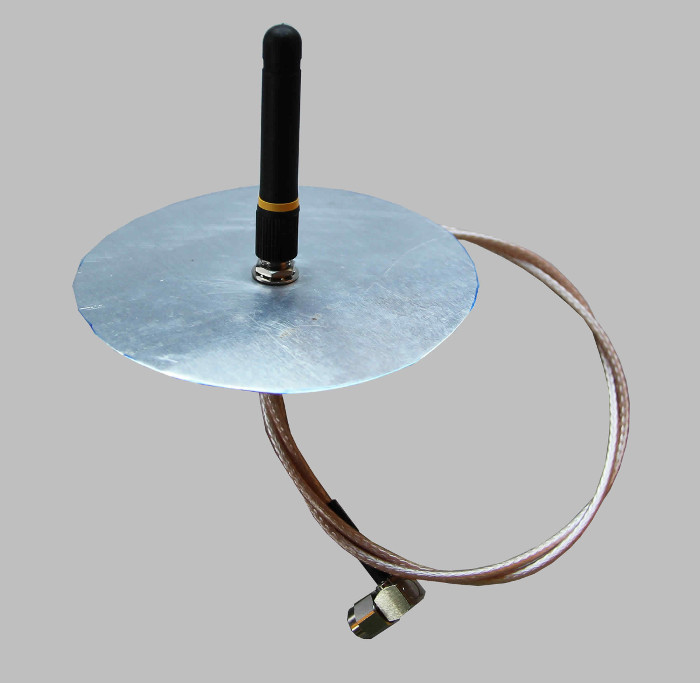
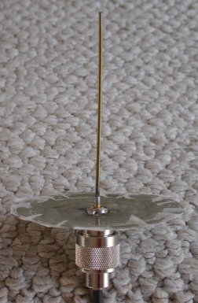
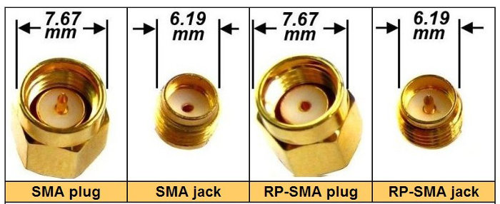

Hi,
Can anyone suggest what i can do?
I have an Antenna on an inverter but the signal drops out from the garage when the door is closed. I wish to extend the cable to the other side of the garage and internal garage partition wall instead of buying a signal booster or repeater but am at a loss as to how long I can make it. Do I need to keep the cable as coaxial RG 174 rf cable or will good microphone cable work. it is shielded. Details of the set up are:
8.5" RG-175 RF Cable with RP SMA Connectors
2.11" Helical Whip 2.4GHz Omi Directional Antenna
The Cable coming of the antenna to the inverter is 42" approx.
I am lead to believe the wave length of 2.4GHz is 12.5cm. is this correct and do I need to keep my cable length within this length ration or half wave length ration.
What is the max distance the cable can be before signal drops off.?
Cheers,
OJ
Re: Extending the Coaxial RG-174 cable from inverter 2.4Ghz Antenna
I'm afraid there's a bit of confusion creeping in there. First, although it is screened, you can't use microphone cable. You must use the correct low-loss RF cable for the job. It's not quite clear what you have at the moment - are you saying your existing set-up is RG-175 cable with the whip coupled to it with an SMA connector (or the cable is integral with the whip but you have the SMA connector on the inverter end of the cable), or are those the parts you're thinking of buying?
However, something is amiss. As far as I know, SMA connectors are 50 Ω characteristic impedance, but the cable is 75 Ω. There is a mismatch there. That might be OK on a very short cable, but it will lead to losses you can ill afford on a long length. You need to find out what the transmitter module inside your inverter is, and what its output impedance is - 50 or 75 Ω - and get the correct cable (and maybe aerial) to match that.
You need to know a lot more about the transmitter, the receiver, the aerials, cable and the transmission path before anyone can predict the maximum length of cable you can have. Is 8.5" the length of cable you have, and 42" the length of cable you think you require?
Re: Extending the Coaxial RG-174 cable from inverter 2.4Ghz Antenna
He wont run into much of a problem using the 50 Ohm SMA connectors with the 75 Ohm cable (that particular combination is sold commercially e.g. www.pasternack.com/sma-male-sma-male-rg179bu-cable-assembly-pe3739-p.aspx)
What will help the performance of the rubber duck antenna the most, is the addition of a counterpoise, something like this:

The counterpoise can be circular or square, doesn't matter which, as long as it's diameter/dimensions match the monopole length.
The rubber duck is a compromise at best, and better performance can be obtained by replacing the rubber duck with a 1/4 wave wire or rod monopole and counterpoise. Like this:
 Details here: www.lincomatic.com/wireless/homebrewant.html
Although max energy transfer occurs when the feedline/antenna combination impedance matches the transmitter output impedance, the use of 75 Ohm feedline with a 50 Ohm transmitter/receiver is not uncommon. (Radio Amateurs have done it for the last 50+ years at power levels much greater than RFM12/69/Wi-Fi, with no ill effects) RG-174 has ~0.5dB loss per foot. (www.4gon.co.uk/solutions/technical_cables_guide.php shows the loss as 48.7dB/100ft at 2.4 GHz), so an RG-174 feedline long enough to span his garage will be quite lossy at 2.4 GHz.
The best results would be obtained by using a directional antenna.
OJ, if you're the builder, tinkerer type, the lincomatic.com site has instructions on how to build several types of directional antennas, all relatively simple, with easily obtainable, low cost materials. If you'd rather buy than build, a google search turns up lots of results, e.g. www.wifi-antennas.co.uk/8dbi-2-4ghz-wireless-networking-directional-yagi-antenna.html
Re: Extending the Coaxial RG-174 cable from inverter 2.4Ghz Antenna
Hi Robert,
Cheers for the reply. I am a bit of a novice when it come to Electronics, sorry!
The cable I meant was RG174. It was a typo sorry. I have found some from maplins online and they say it is 50Ω
The antenna has a male connector on which screws in to a sma female connector on the end of the cable which is itself approx 43" long from connector to connector. The other connector on the end of the cable screws to a Zigbee card inside the inverter. I was hoping to make this cable longer by making an extension cable to add between the inverter and existing setup up to 15m to get the antenna closer to the house as there are a few internal walls in the garage which is blocking the signal. May get away with a lot shorter. The extension cable would be RG174 like existing with a female and male RP174 SMA connector on to connect to zigbee card inside inverter and the exsisting supplied cable going to antenna.
The details i have in the install guide are:
RF Transmit Power: 10dBm
Reciever Sensitivity: -102
EIRP with Antenna: 14dBm
Voltage 5V, Current 1A.
the details about the supplied set up are written as:
8.5" RG-174 RF Cable with RP-sma Connectors (its not 8.5" thought! so dont know what they mean here)
2.11" Helical Whip 2.4gHz Omi directional Antenna
all the details are in here that i have.
http://www.solaredge.com/files/pdfs/se_application_zigbee_gateway.pdf
Cheers, Ollie
Re: Extending the Coaxial RG-174 cable from inverter 2.4Ghz Antenna
Thank you Bill,
Very informative. I appreciate your help. Think I going to have a go at building one in my spare time just to give it a go! Looks relatively simple. (Famous last words)
Cheers for all the help.
Re: Extending the Coaxial RG-174 cable from inverter 2.4Ghz Antenna
Hi Ollie,
Thanks for the good words.
If reasonable care is taken when measuring and cutting the antenna elements, you should have good results. Accuracy is important when making an antenna that will be used at 2.4GHz, as it doesn't take much error in element length to significantly reduce antenna performance.
You definitely dont want an RG-174 feedline 15 meters long. At that length, the loss would be ~24dB, a reduction in signal strength - both transmitting and receiving - of ~200X.
If you have the time and tools, your best bet would be to make one of the directional antennas. If it's possible, using directional antennas on both ends of the wi-fi link would be an additional improvement.
Your 8.5" cable has Reverse Polarity SMA connectors. (Used on WiFi gear, but not commonly found on other equipment) So if you buy a cable to extend your feedline a bit, you might need to specify a matching RP connector on your new cable. Here's what they look like compared to standard SMA connectors:

Regards,
Bill